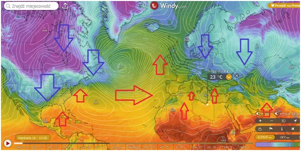
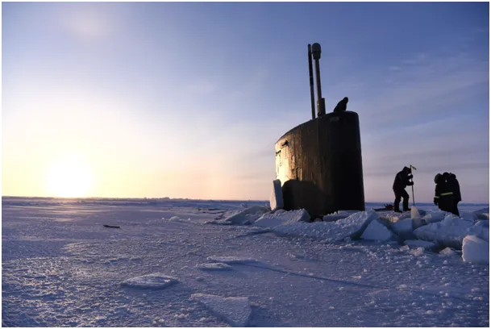
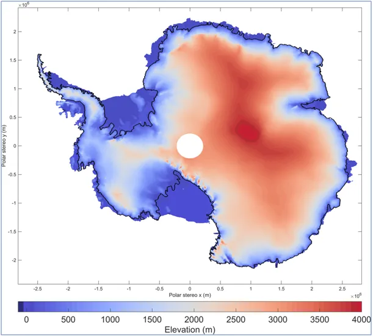
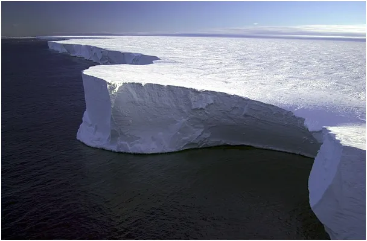

Lodowiec z oceanu powstał i w ocean się obróci, ale nie każdy. Dlatego poziom oceanów opada!
Gdy po zimie na północy zaczyna się ogrzewanie Arktyki na południu sprawy mają się zupełnie inaczej. Biegun północny to ocean zmarznięty zaledwie na powierzchni. Pod tym lodem trwa wymiana prądów morskich niosących ciepło i daje to możliwość zaistnienia arktycznej wiosny na północy naszej planety. Pływają tam też łodzie podwodne. Biegun południowy to kontynent, lita skała wypiętrzona ponad poziom morza na kilka kilometrów. Antarktyczne lato pojawia się na chwilę tylko na brzegach południowego kontynentu.

Ilość energii odbieranej od Słońca do ogrzewania Ziemi po stronie nasłonecznionej jest prawie identyczna do energii wypromieniowanej w Kosmos przez stronę nocną. Z powodu nachylenia osi ziemskiej każdy z biegunów przez pół roku znajduje się przez całą dobę po stronie nocnej, dlatego okolice okołobiegunowe są centrami ucieczki ciepła z Ziemi w Kosmos w okresie zimowym. Latem kąt padania Słońca jest na tyle ostry, że nie ma szans na dodatni bilans cieplny, czego dowodem jest centrum interior Antarktydy, gdzie obecnie w schyłku lata mamy tam poniżej minus 40 st. C a na wybrzeżu minus kilka. Wyjątkami są wąskie pasy wybrzeża, gdzie temperatury są chwilowo dodatnie, jest to skutek ciepłego wiatru (plus kilka st. C) niesionego z prądami morskimi.

Antarktyda to góry, praktycznie od brzegów kontynentu wysokie na 2 km, a w centrum kontynentu od 3 do 4 km. Powietrze z powodu spadku ciśnienia podnoszone o każde 100 m stygnie natychmiast o 0,6 st. C, a gdy jest suche jak na Antarktydzie, to nawet o cały jeden st. C. Zatem każdy wiatr znad oceanu wpadając nad ten kontynent traci od razu 12-15 st. C, a lecąc dalej kolejne 20 st. C.

Stąd normą są tam temperatury między minus 40 a minus 80 st. C. Ten kontynent jest pułapką dla każdej kropli wody, która tam trafi. Padający tam śnieg tworzy wciąż nowe warstwy czyniąc góry coraz wyższymi. W centrum kontynentu opady są bardzo małe z powodu skrajnie niskiej wilgotności powietrza, każdy podmuch znad oceanu jest wyżymany z wilgoci do cna, stąd większość opadów spada na wybrzeżu.

Tak powstają brzegowe lodowce, które pod wpływem grawitacji nawet w ujemnej temperaturze zsuwają się do oceanu, z którego powstały. Śnieg tworzący lodowiec powstaje z parującej wody oceanicznej. Większość tamtejszego śniegu nie tworzy przybrzeżnych lodowców tylko narastające od 11 000 lat bezkresne śniegowe pustynie, co powoduje, że rosnąca czapa lodowa Antarktydy rośnie kosztem oceanów. Jest to jednak w skali globu proces tak powolny, że nie można zaobserwować spadku poziomu oceanów światowych. Jednym z ważniejszych powodów niemożności wykonania takiego pomiaru jest ciągłe falowanie wód i przemieszczanie się ich w pionie i poziomie pod wpływem pływów oceanicznych spowodowanych grawitacją Księżyca. Zatem śpijcie spokojnie mieszkańcy wysp i wybrzeży, zmiana linii brzegowej to skutek falowania morza, z prostego powodu, że kamienie i piasek toną w wodzie fale brzegowe więcej ich zabierają w głębiny niż wyrzucają.
Paweł Klimczewski